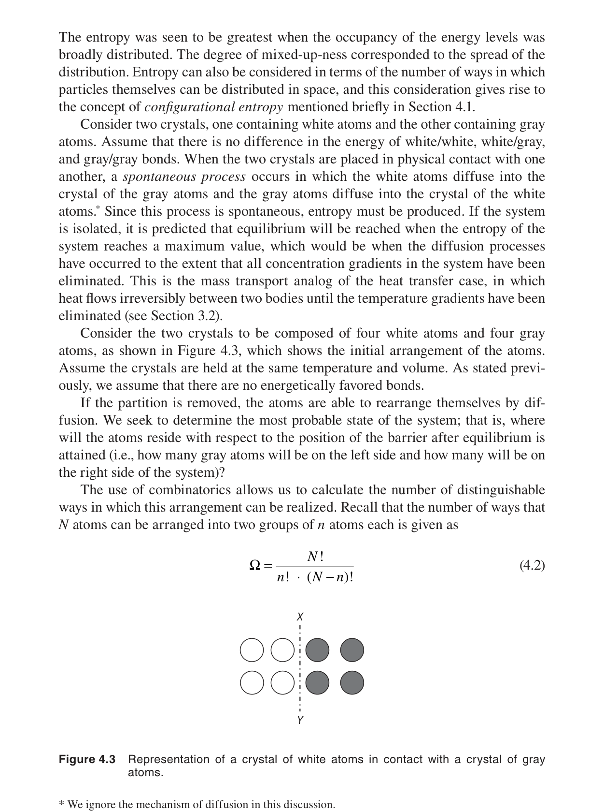
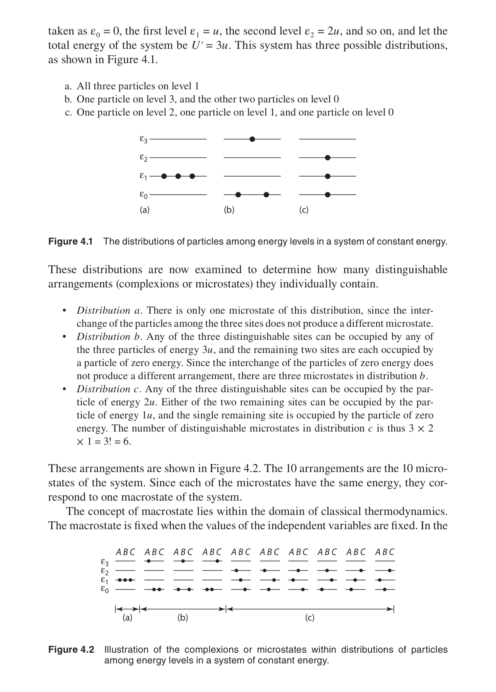
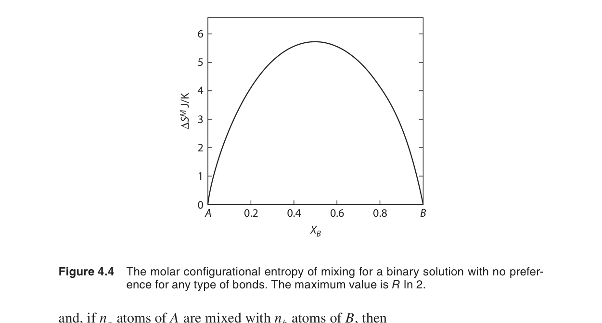
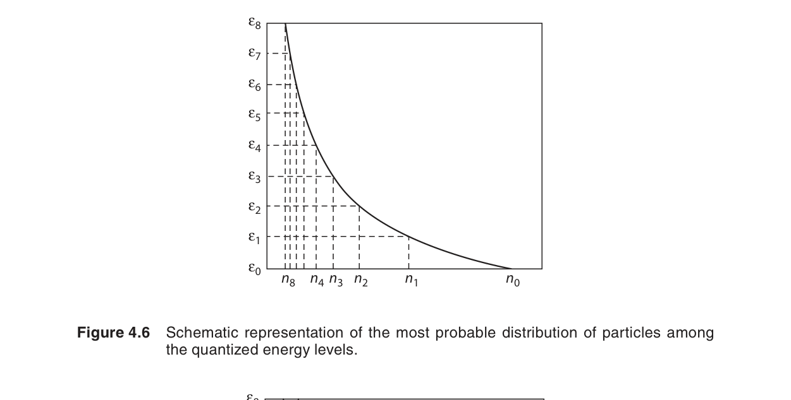

熵的統計詮釋
前三章從宏觀角度建立了熱力學定律。本章轉向微觀視角，用原子和分子的行為來解釋熵的物理意義。核心洞察來自 Boltzmann：$S = k_B \ln \Omega$——熵是系統可及的微觀態數目的對數。這個簡潔的方程式將宏觀熱力學與微觀統計力學統一起來。
在本章中，我們將學習：
- 微觀態（microstate）vs 宏觀態（macrostate）的區別
- Boltzmann 熵公式：$S = k_B \ln \Omega$
- 微正則系綜（microcanonical ensemble）與最可能分布
- Boltzmann 分布：$n_i = n_0 e^{-\varepsilon_i/k_B T}$
- 配分函數（partition function）的引入
- 溫度如何影響能階的佔據
- 熱平衡的統計力學條件
🧭 本章推理地圖
- 已知條件：宏觀熵需要微觀解釋，系統可用宏觀態與微觀態區分（§4.1–§4.3）。
- 中間機制：微觀態計數、Boltzmann 熵與最可能分布連接機率與熱力學（§4.4–§4.5）。
- 可預測結果：溫度決定能階佔據、熱平衡條件與熱流方向（§4.6–§4.8）。
- 工程用途：用缺陷濃度、熱容量、擴散與反應活化機率理解材料行為（§4.2、§4.5、Ch6）。
4.1 導論（Introduction）
古典熱力學（第一至第三章）是現象學的——它描述了能量和熵的行為，但不解釋為什麼這些定律成立。統計熱力學提供了解釋——它從原子的離散能階和機率分布出發，推導出宏觀熱力學的所有關係。
統計熱力學的威力在於：它可以從第一原理計算熱力學量（如熱容量、熵、自由能），而不需要做實驗測量。對於材料科學家來說，這意味著可以在實驗之前預測新材料的相穩定性和反應行為。
歷史脈絡與 Boltzmann 的貢獻
統計熱力學的起源可以追溯到 19 世紀後期。Ludwig Boltzmann（1844–1906）在與 Ernst Mach 和 Wilhelm Ostwald 等實證主義者的激烈論戰中，堅定捍衛了原子論的觀點。他提出的 $S = k_B\ln\Omega$ 公式——現在刻在他的墓碑上——是史上最深刻的物理學洞察之一。Boltzmann 的洞見在於認識到：熵不是物質的「性質」，而是我們對系統微觀狀態知識缺乏程度的度量。這個視角後來被 Claude Shannon 在 1948 年推廣到資訊理論中，形成了「資訊熵」的概念——$H = -\sum_i p_i\ln p_i$，與 Boltzmann 公式完全同構。
值得注意的是，Boltzmann 在世時他的工作並未得到廣泛認可。直到 1905 年 Einstein 發表布朗運動理論，原子的真實性才被最終證實。Boltzmann 於 1906 年自殺，未能看到他的統計力學成為物理學的基石。今天，從固態物理到天文物理，從化學動力學到材料設計，統計力學的思想貫穿整個現代科學。
📝 自編概念例：宏觀與微觀描述的分工
題目：若已知某材料的熱容量曲線，古典熱力學與統計熱力學各能提供什麼？
解：古典熱力學可把熱容量用於能量與熵變計算；統計熱力學可從聲子、電子或缺陷能階解釋熱容量為何如此變化。
物理意義：宏觀量可測量，微觀模型則讓材料設計具有預測能力。
4.2 熵與原子尺度的無序（Entropy and Disorder on an Atomic Scale）
在原子層面，熵反映的是系統的無序度或隨機性。考慮一個簡單的例子：將兩種不同氣體混合。混合前，每種氣體的分子分別侷限在自己的容器中——這是有序的狀態。混合後，兩種分子隨機分布——這是無序的狀態。混合過程的熵增加對應於無序度的增加。
另一個經典例子是晶體中的空位（vacancy）：完美晶體只有一種排列方式（每個原子在它的晶格點上），但一個空位可以出現在 $N$ 個不同的位置——這引入了 $N$ 倍的無序度。這就是為什麼即使在絕對零度以上，晶體中總有一些本徵的點缺陷——它們增加的熵（$-T\Delta S$ 項）可以抵消形成缺陷所需的能量（$\Delta H$），使總自由能降低。
數值範例：晶體中空位的平衡濃度
上述關於缺陷穩定性的定性討論，可以通過具體的數值計算來定量理解。考慮一個有 $N$ 個晶格點的金屬晶體，其中有 $n$ 個空缺的晶格點（空位）。形成 $n$ 個空位後，將空位分配到 $N$ 個晶格點的方式數——即微觀態數——為：
使用 Stirling 近似 $\ln N! \approx N\ln N - N$（對大 $N$ 成立）：
自由能變化為 $\Delta G = n\Delta H_v - T\Delta S$，其中 $\Delta S = k_B\ln\Omega$。在平衡時 $\partial(\Delta G)/\partial n = 0$，得到：
以銅（Cu）為例的具體計算：
- 銅的空位形成焓：$\Delta H_v \approx 1.0\ \text{eV} = 1.602 \times 10^{-19}\ \text{J}$（每個空位）
- $k_B = 1.381 \times 10^{-23}\ \text{J/K}$，因此在 300 K（室溫）：$k_B T = 0.026\ \text{eV}$
- $\displaystyle \frac{n}{N} = e^{-1.0/0.026} = e^{-38.5} \approx 1.9 \times 10^{-17}$——低溫下空位極少，幾乎無法檢測
- 在 1000 K：$k_B T = 0.086\ \text{eV}$，$\displaystyle \frac{n}{N} = e^{-1.0/0.086} = e^{-11.6} \approx 9.2 \times 10^{-6}$——約百萬分之 9
- 在 1300 K（接近銅的熔點 1358 K）：$k_B T = 0.112\ \text{eV}$，$\displaystyle \frac{n}{N} = e^{-1.0/0.112} = e^{-8.93} \approx 1.3 \times 10^{-4}$——約萬分之 1.3
這個範例清楚展示了 Boltzmann 因子 $e^{-\Delta H_v/k_B T}$ 如何定量決定缺陷濃度。在材料科學中，這種 Arrhenius 形式的關係（$n/N \propto e^{-E/k_B T}$）無處不在——從擴散係數到化學反應速率，都遵循相同的統計規律。
📝 自編概念例：空位濃度的溫度趨勢
題目：若空位形成焓固定，升高溫度會讓平衡空位濃度增加或降低？
解：$n/N\approx e^{-\Delta H_v/k_BT}$，溫度升高使指數負值絕對值變小，因此空位濃度增加。
物理意義：高溫熱處理更容易產生熱平衡缺陷，也會加速擴散。

4.3 微觀態的概念（The Concept of Microstate）
一個微觀態（microstate）是系統在微觀層面的完整描述——指定每個原子的位置和動量（在量子力學中，指定每個粒子的量子態）。一個宏觀態（macrostate）則只用少數宏觀變數（$U$, $V$, $N$）來描述。
關鍵點：一個宏觀態對應於極多個微觀態。例如，對於 1 莫耳理想氣體（$N_A \approx 6 \times 10^{23}$ 個分子），宏觀態「$U = 3.7\ \text{kJ}$，$V = 22.4\ \text{L}$」對應的微觀態數目是天文數字——大約 $10^{10^{24}}$。
統計熱力學的基本假設（等機率先驗假設）：對於一個孤立系統，所有可及的微觀態出現的機率相等。這看似簡單的假設蘊含了整個統計熱力學。
📝 自編概念例：宏觀態與微觀態
題目：同樣是 1 mol 氣體，為什麼「均勻分布」比「全部集中在左半邊」更常見？
解：均勻分布對應的微觀排列數遠多於集中在左半邊的排列數，因此隨機微觀運動幾乎總會呈現均勻宏觀態。
物理意義：熵增是機率壓倒性偏向高微觀態數宏觀態的結果。

4.4 微正則系綜方法（The Microcanonical Approach）
微正則系綜（microcanonical ensemble）描述一個完全孤立的系統——$U$、$V$、$N$ 固定。系統的熵由 Boltzmann 的著名公式給出：
其中 $\Omega$ 是系統可及的微觀態數目，$k_B = R/N_A = 1.381 \times 10^{-23}\ \text{J/K}$ 是波茲曼常數。
這條方程式被刻在 Boltzmann 的墓碑上——它可能是物理學中最深刻的方程式之一。它將抽象的熱力學量 $S$ 與可以計數的微觀態數目 $\Omega$ 聯繫起來。
對於兩個子系統的組合，總微觀態數是乘積：$\Omega = \Omega_1 \times \Omega_2$。因此總熵是加和：$S = k_B \ln(\Omega_1 \Omega_2) = k_B \ln \Omega_1 + k_B \ln \Omega_2 = S_1 + S_2$。這解釋了為什麼熵是廣延量。
最可能分布
對於一個由大量粒子組成的系統，絕大多數微觀態集中在某個特定的分布 $\{n_i\}$ 附近——這就是最可能分布（most probable distribution）。這個分布對應於 $\Omega$ 的最大值。由於 $\Omega$ 的峰值極其尖銳（對於宏觀系統），最可能分布實際上就是唯一的可觀察分布。
尋找最可能分布的數學方法是使用 Lagrange 乘數法，在總粒子數 $\sum n_i = N$ 和總能量 $\sum n_i \varepsilon_i = U$ 的約束下最大化 $\ln \Omega$。這導出：
這就是著名的波茲曼分布（Boltzmann distribution）——統計熱力學的核心結果。
Lagrange 乘數法：最可能分布的完整推導
讓我們詳細展示如何從微正則系綜出發，利用 Lagrange 乘數法推導最可能分布。系統由 $N$ 個可區分粒子組成，分布在能階 $\varepsilon_i$（$i=0,1,2,\dots$）上，各能階的簡併度為 $g_i$。能階 $i$ 上的粒子數為 $n_i$，滿足兩個約束條件：
對於可區分粒子，將 $N$ 個粒子分配到各能階的方式數（即微觀態數）為：
我們的目標是在兩個約束條件下最大化 $\Omega$（等價於最大化 $\ln\Omega$，因為對數是單調函數）。使用 Stirling 近似 $\ln n! \approx n\ln n - n$（對 $n \gg 1$ 成立）：
引入 Lagrange 乘數 $\alpha$ 和 $\beta$ 來處理兩個約束條件：
對 $n_i$ 求偏導並令為零（駐點條件）：
解得：
由粒數守恆 $\sum_i n_i = N$ 可得 $e^{-\alpha} = N / \sum_i g_i e^{-\beta\varepsilon_i}$，記配分函數 $Z \equiv \sum_i g_i e^{-\beta\varepsilon_i}$，則 $e^{-\alpha} = N/Z$，因此：
參數 $\beta$ 的熱力學意義可以通過對比宏觀熱力學來確定。由 $S = k_B\ln\Omega$ 和 $dS = \delta q_{\text{rev}}/T$，可以證明 $\beta = 1/k_B T$。這就是波茲曼分布（式 4.3）。
最可能分布的尖銳性
對於宏觀系統（$N \sim 10^{23}$），最可能分布附近的漲落極其微小。可以證明，分布 $\{n_i\}$ 的相對標準差滿足：
對於 $N = 10^{23}$，$\delta n_i / n_i \sim 10^{-11.5}$——這意味著實際觀測到的分布與最可能分布的偏離完全可以忽略。這就是為什麼統計力學的預測本質上是確定性的，儘管其基礎是機率論。宏觀系統的行為之所以可預測，不是因為我們精確知道每個粒子的運動，而是因為天文數字級別的粒子數使得漲落被徹底平均掉。

📝 自編概念例：熵的可加性
題目：兩個獨立子系統分別有 $\Omega_1$、$\Omega_2$ 個微觀態，總熵為何可相加？
解：總微觀態數為 $\Omega_1\Omega_2$，所以 $S=k_B\ln(\Omega_1\Omega_2)=S_1+S_2$。
物理意義：熵是廣延量，源自獨立微觀態數的乘法組合。
4.5 波茲曼分布（The Boltzmann Distribution）
波茲曼分布描述了在熱平衡下，粒子在各能階上的分布：
其中：
- $n_i$ = 能階 $i$ 上的粒子數
- $g_i$ = 能階 $i$ 的簡併度（degeneracy）
- $\varepsilon_i$ = 能階 $i$ 的能量
- $Z = \sum_i g_i e^{-\varepsilon_i/k_B T}$ = 配分函數（partition function）
配分函數 $Z$ 是統計熱力學中最重要的量——所有熱力學性質都可以從 $Z$ 推導出來：
從配分函數推導熱力學量
配分函數 $Z$ 之所以是統計熱力學的核心，是因為所有熱力學量都可以從 $Z$ 及其偏導數唯一確定。以下是完整的推導過程：
內能 $U$：
熵 $S$：
Helmholtz 自由能 $A$：
壓力 $P$：
這組關係式揭示了深刻的統一性：只要我們能計算出系統的配分函數 $Z$，就能得到所有的熱力學性質——無需任何額外假設。不同的材料對應不同的 $Z$，而 $Z$ 的具體形式由系統的 Hamiltonian（Hamiltonian）和量子力學能階結構決定。因此，統計熱力學將熱力學量的計算還原為求解 Schrödinger 方程這一（原則上）純粹的量子力學問題。

📝 自編概念例：能階佔據比
題目：兩能階相差 $\Delta\varepsilon$，在熱平衡下高能階與低能階佔據比如何表示？
解：若簡併度相同，$n_2/n_1=e^{-\Delta\varepsilon/k_BT}$。
物理意義：能量差越大或溫度越低，高能階佔據越少。
4.6 溫度的影響（The Influence of Temperature）
波茲曼因子 $e^{-\varepsilon_i/k_B T}$ 揭示了溫度如何影響能階的佔據：
- 低溫：$k_B T \ll \varepsilon_i$（對激發態而言），$e^{-\varepsilon_i/k_B T} \approx 0$——只有最低能階被佔據。系統「凍結」在基態。
- 高溫：$k_B T \gg \varepsilon_i$，$e^{-\varepsilon_i/k_B T} \approx 1$——各能階幾乎均勻佔據。系統趨向最大無序。
這解釋了熱容量的溫度依賴性（第六章）：低溫下，振動自由度被凍結，$C_V$ 低於經典值；隨著溫度升高，更多自由度被激活，$C_V$ 上升。
數值範例：二能階系統的 Boltzmann 因子
考慮一個簡單的二能階系統：基態能量 $\varepsilon_0 = 0$，激發態能量 $\varepsilon_1 = \varepsilon$。為了具體，取 $\varepsilon = 0.1\ \text{eV}$（典型的分子振動能階尺度）。粒子數比值由 Boltzmann 因子給出：
在不同溫度下的具體數值：
| $T$ (K) | $k_B T$ (eV) | $\varepsilon/k_B T$ | $n_1/n_0$ | $n_1/(n_0+n_1)$ |
|---|---|---|---|---|
| 100 | 0.0086 | 11.6 | $9.2 \times 10^{-6}$ | $9.2 \times 10^{-4}\%$ |
| 300 | 0.0259 | 3.86 | $2.1 \times 10^{-2}$ | $2.1\%$ |
| 600 | 0.0517 | 1.93 | $0.145$ | $12.7\%$ |
| 1200 | 0.103 | 0.97 | $0.379$ | $27.5\%$ |
| 3000 | 0.259 | 0.39 | $0.68$ | $40.5\%$ |
| $\infty$ | $\infty$ | 0 | 1 | $50\%$ |
這個表格清晰展示了三個重要極限：
- 低溫極限（$k_B T \ll \varepsilon$）：激發態幾乎沒有粒子，$n_1/n_0 \to 0$——系統「凍結」在基態
- 高溫極限（$k_B T \gg \varepsilon$）：兩能階均勻佔據，$n_1/n_0 \to 1$——系統趨向最大無序
- 室溫附近（$k_B T \approx \varepsilon/4$）：約 $2\%$ 的粒子在激發態——雖然比例不大，但對於化學反應速率和熱容量已經有顯著影響
對於更複雜的多能階系統，同樣的原理成立——低溫時系統「凍結」在基態附近，僅最低能階被佔據；高溫時粒子分布到更多能階上，系統的有效自由度增加。這就是 Debye 熱容量理論的核心物理圖像：溫度升高「激活」了更多振動模態，從而增加了系統吸收熱量的能力。
延伸範例：Boltzmann 因子在化學反應中的應用
Arrhenius 公式 $k = A e^{-E_a/k_B T}$ 直接源自 Boltzmann 分布。反應速率常數 $k$ 正比於能量超過活化能 $E_a$ 的分子比例。例如，對於典型的化學反應 $E_a = 0.5\ \text{eV}$：
- 在 300 K（室溫）：$e^{-0.5/0.026} = e^{-19.2} \approx 4.4 \times 10^{-9}$——反應極慢
- 在 500 K：$e^{-0.5/0.043} = e^{-11.6} \approx 9.2 \times 10^{-6}$——速度提升約 2000 倍
- 在 1000 K：$e^{-0.5/0.086} = e^{-5.81} \approx 3.0 \times 10^{-3}$——速度提升約百萬倍
這就是溫度對化學反應速率產生指數級影響的微觀根源——而這個根源就是 Boltzmann 因子 $e^{-\varepsilon/k_B T}$。
📝 自編概念例：比較 Boltzmann 因子
題目：同一能障下，1000 K 的跨越機率會比 500 K 高或低？
解：Boltzmann 因子為 $e^{-E/k_BT}$，溫度升高使指數負值絕對值變小，因此跨越機率較高。
物理意義：高溫會顯著提高擴散、缺陷形成與反應速率。
4.7 熱平衡與波茲曼方程式（Thermal Equilibrium and the Boltzmann Equation）
當兩個系統可以交換能量（熱接觸）時，它們最終達到熱平衡——此時兩者的溫度相等。從統計力學的角度，熱平衡的條件是：
這直接導致溫度的統計定義：
或等價地，使用第三章的定義：
溫度的統計定義之完整推導
讓我們從微正則系綜出發，嚴格推導溫度的統計定義。考慮兩個系統 $A$ 和 $B$ 熱接觸（可以交換能量，但 $V$ 和 $N$ 各自固定），構成一個孤立複合系統。總能量守恆：$U_A + U_B = U_{\text{total}}$（常數）。
複合系統的總微觀態數為：
在平衡時，系統處於最可能（即 $\Omega_{\text{total}}$ 最大）的宏觀態。求極值：
由於 $dU_B/dU_A = -1$，平衡條件化為：
即：
這就是熱平衡的統計條件。從宏觀熱力學我們知道，熱平衡時兩系統的溫度相等。因此，$d\ln\Omega/dU$ 必然單調地與 $1/T$ 相關。代入 Boltzmann 公式 $S = k_B\ln\Omega$：
從而得到溫度的統計定義：
溫度統計定義的物理詮釋：
- 低溫：$d\ln\Omega/dU$ 大 → 系統的能態密度低，增加少量能量就能顯著增加可及的微觀態數
- 高溫：$d\ln\Omega/dU$ 小 → 系統的能態密度高，需要大量能量才能顯著增加微觀態數
- 負溫度（$T < 0$）：$d\ln\Omega/dU < 0$ → 存在能階上界且高能態佔據多於低能態（粒子數反轉）。注意這不是「比絕對零度更冷」——負溫度系統實際上比任何正溫度系統更「熱」（能量會從負溫度系統流向正溫度系統）
📝 自編概念例：熱平衡條件
題目：兩個可交換能量的子系統達到熱平衡時，哪個量相等？
解：總熵最大時，兩者滿足 $(\partial S_1/\partial U_1)=(\partial S_2/\partial U_2)$，也就是 $T_1=T_2$。
物理意義：溫度相等是總微觀態數最大化的結果。
4.8 熱流與熵的產生（Heat Flow and the Production of Entropy）
當兩個不同溫度的物體熱接觸時，能量從高溫流向低溫。從統計力學看，這是因為總微觀態數 $\Omega_{\text{total}} = \Omega_1 \times \Omega_2$ 在能量重新分配後增加。具體而言：
從高溫物體取出 $\delta q$ 的熱量，其熵減少 $\delta q/T_h$。將這份熱量放入低溫物體，其熵增加 $\delta q/T_c$。淨熵變：
這與第三章的結論完全一致——但現在有了微觀的解釋：能量重新分配使得總微觀態數增加，而熵的增加就是這個增加的對數度量。
不可逆過程的統計詮釋
任何不可逆過程都可以從微觀態的角度統一理解。考慮兩個初始溫度不同的物體 $T_h > T_c$。當它們熱接觸時，微量的熱量 $\delta q$ 從高溫物體流向低溫物體。總微觀態數的變化為：
因此 $\Delta S = k_B\,\Delta\ln\Omega_{\text{total}} > 0$。這個推導清晰地展示了：熱流的方向（從高溫到低溫）不是被任何「力」驅動的，而是因為這個方向使總微觀態數（即總熵）增加的結果。
一般不可逆過程的統一原理：
同樣的邏輯適用於任何不可逆過程：
- 擴散：粒子從高濃度流向低濃度，因為均勻分布對應的微觀態數遠多於聚集分布
- 化學反應：反應趨向平衡組成，因為平衡組成的微觀態數（考慮所有分子排列和能量分布）最大
- 熱傳導：熱量從高溫流向低溫，如上所述，使總微觀態數增加
- 黏滯耗散：有序的宏觀動能被轉化為微觀的熱運動（無序），增加微觀態數
所有這些過程都可以統一理解為：系統自發地向微觀態數最多的宏觀態演化。這個視角不僅統一了各種不可逆現象，還揭示了第二定律的統計本質——它不是絕對的物理定律，而是機率論的推論。對於宏觀系統，偏離最可幾分布的機率小到在宇宙年齡內都不會觀測到一次。但對於微小系統（如生物分子馬達），漲落不可忽略——這就是為什麼微觀尺度上第二定律的「違反」是可能的（雖然在統計意義上仍遵循漲落定理）。
📝 自編概念例：熱流造成熵產生
題目：100 J 熱從 400 K 流向 300 K，總熵變為多少？
解：$\Delta S=-100/400+100/300=0.0833\ \text{J/K}>0$。
物理意義：熱流沿自發方向進行時，宇宙總熵增加。
初學者常見錯誤
自我檢測
1. 為什麼 $S=k_B\ln\Omega$ 會讓熵成為廣延量？
獨立子系統的微觀態數相乘：$\Omega=\Omega_1\Omega_2$。取對數後變成相加，所以 $S=S_1+S_2$。
正文依據：§4.4
2. 升高溫度如何影響高能階佔據？
Boltzmann 因子 $e^{-\varepsilon/k_BT}$ 中，溫度升高會減弱高能量的懲罰，因此高能階佔據比例增加。
正文依據：§4.5–§4.6
3. 熱平衡為什麼等價於溫度相同？
兩子系統交換能量時，總熵最大條件要求 $\partial S/\partial U$ 相等；由 $1/T=(\partial S/\partial U)$，得到 $T_1=T_2$。
正文依據：§4.7
延伸資源與下一章
本章摘要
- Boltzmann 熵公式：$S = k_B \ln \Omega$——熵是微觀態數目的對數。
- 微觀態 vs 宏觀態：一個宏觀態對應極多微觀態。系統壓倒性地處於微觀態數最多的宏觀態。
- 波茲曼分布：$n_i = n_0 e^{-\varepsilon_i/k_B T}$——熱平衡下的粒子分布。
- 配分函數：$Z = \sum_i g_i e^{-\varepsilon_i/k_B T}$。所有熱力學量都可從 $Z$ 推導。
- 溫度的統計定義：$1/T = (\partial S/\partial U)_{V,N}$。溫度反映熵對能量的敏感度。
- 熱流的熵增：$\Delta S = \delta q(1/T_c - 1/T_h) > 0$。微觀上源自總微觀態數的增加。
- 微正則系綜與 Lagrange 乘數法：在 $\sum n_i = N$ 和 $\sum n_i\varepsilon_i = U$ 的約束下最大化 $\ln\Omega$，導出波茲曼分布 $n_i \propto g_i e^{-\varepsilon_i/k_B T}$。
- 配分函數的威力：$Z = \sum_i g_i e^{-\varepsilon_i/k_B T}$ 包含系統的所有熱力學信息：$U = N k_B T^2(\partial\ln Z/\partial T)_V$，$S = N k_B\ln Z + N k_B T(\partial\ln Z/\partial T)_V$，$A = -N k_B T\ln Z$。
- 溫度的統計定義：$1/k_B T = (\partial\ln\Omega/\partial U)_{V,N}$。溫度衡量微觀態數目對能量的敏感度，而非「冷熱程度」。
- 數值估算：$k_B T$ 是自然的能量尺度（300 K 時 $\approx 0.026\ \text{eV}$）。Boltzmann 因子 $e^{-\Delta\varepsilon/k_B T}$ 決定能階佔據比、缺陷濃度、化學反應速率等一切熱激活過程。
- 交叉連結：統計熱力學為第三章的宏觀熵 $dS = \delta q_{\text{rev}}/T$ 提供了微觀基礎，並為第六章的 Debye 模型熱容量計算提供了理論工具。三者共同構成材料熱力學的完整體系。
- 核心哲學：第二定律不是外加的物理規則——它是機率論的必然結果。宏觀系統的行為之所以確定，是因為 $N \sim 10^{23}$ 使得漲落 ($\propto 1/\sqrt{N}$) 完全可以忽略。